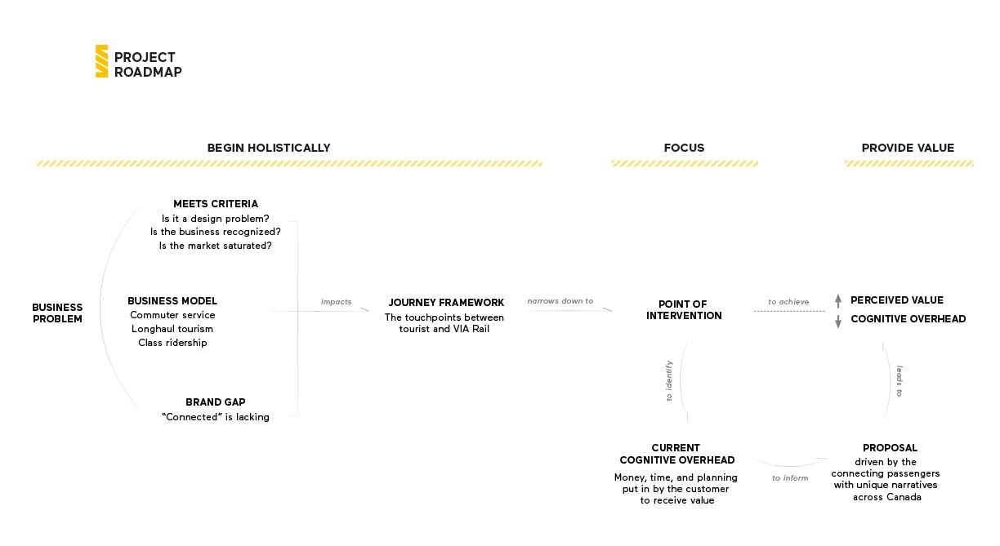
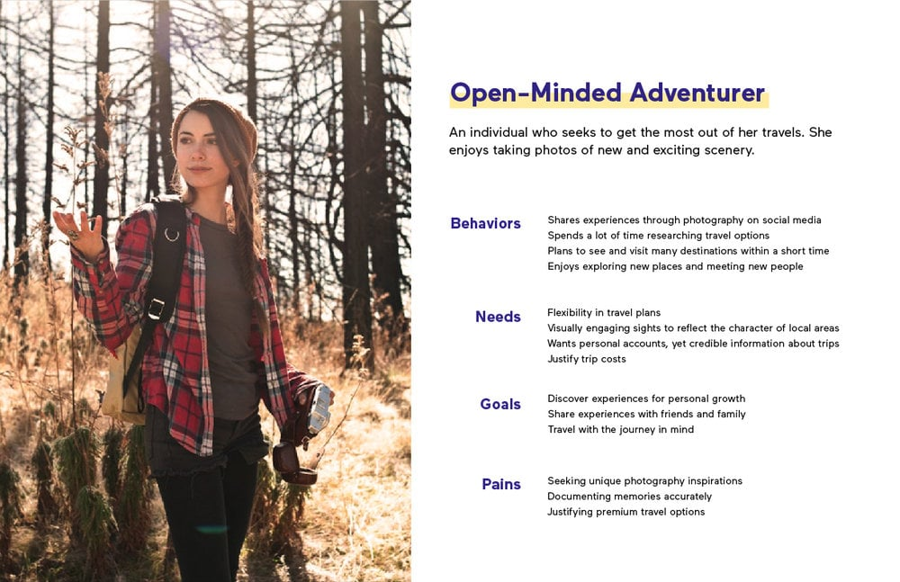
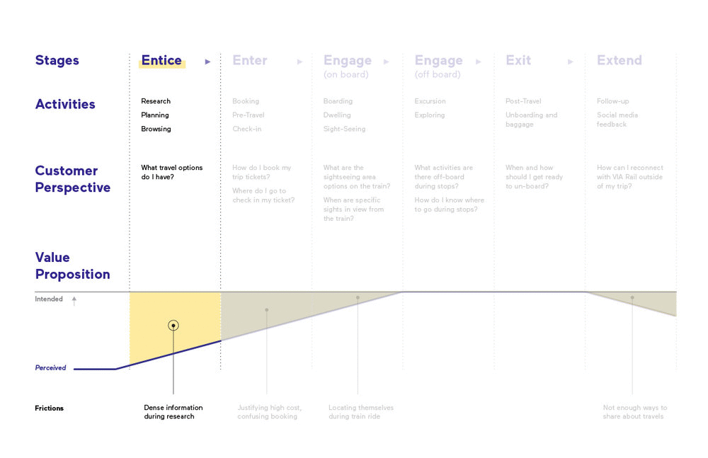
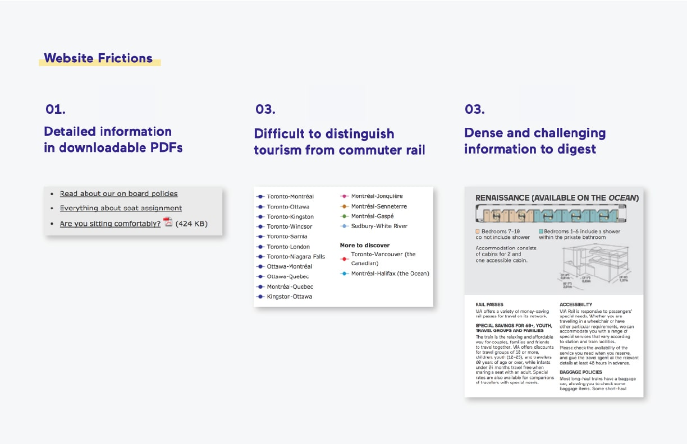
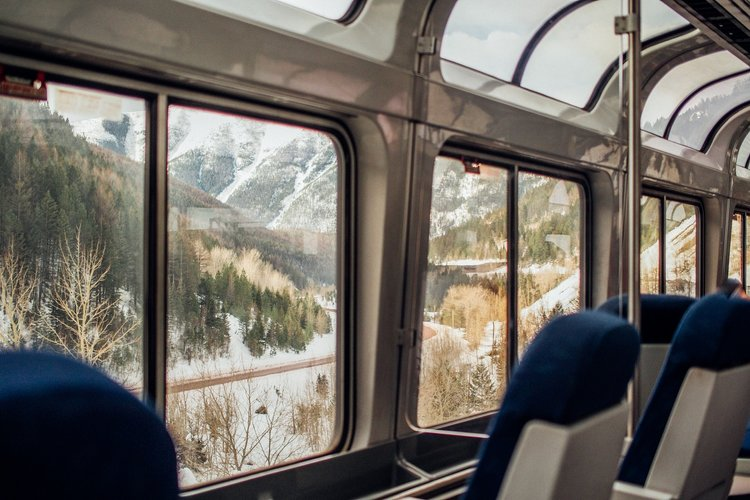

VIA Journey
As Canada’s only provider of coast-to-coast passenger rail service, VIA Rail is Canada’s equivalent of a national passenger train. VIA Rail’s primary revenue stream comes from its local commuter services, with its highly rated long-distance tourism trains struggling in sales.
VIA Journey is our digital solution to VIA Rail’s declining ridership and brand misperception, inviting first-time potential passengers to reassess the value proposition VIA Rail offers. As a microsite VIA Journey presents train travel as an alternative and enjoyable form of transportation tourism, aligning VIA Rail’s value proposition alongside consumers’ tangible, intangible, and aspirational values.
My Role: UX & Content Strategist, Writer, Business Analyst
My Contribution:
- identified and quantified VIA Rail's business problem through an analysis and consolidation of financial earnings reports and passenger statistics, placing their problem in a national economic context
- aligned business analysis with user experience principles, only targeting business problems addressable by design
- created initial set of wireframes that were eventually iterated to final product proposal
- produced/advised with significant amounts of written content, including but not limited to product copy, presentation scripts, video voiceovers, and preliminary reports to teaching staff
Team: Sarah Tong, Michelle Ng, Gabriel Yeung, Grant Zou
Timeline: 4 weeks
Approach
Business Challenges
In the last two years, the Canadian transportation tourism industry has seen a surge in demand as an increasing number of Canadians choose to vacation domestically. This growth in demand has been observed across the entire industry, with passenger air and train rivals such as Rocky Mountaineer observing double-digit growth.
Despite this, VIA Rail is struggling to fill seats and has seen its tourism trains losing $8 million in 2016 alone. While demand for transportation tourism evidently exists, little of it was directed towards VIA Rail's offerings. The poor performance of VIA Rail relative to its competitors was our first indication that VIA Rail had a problem with its value proposition.
Business Challenges
While the rest of the Canadian tourism industry has been experiencing a growth in demand, VIA Rail is struggling and has lost $8 million in its tourism division..
While demand for transportation tourism evidently exists, little of it was directed towards VIA Rail's offerings. The poor performance of VIA Rail relative to its competitors was our first indication that VIA Rail had a problem with its value proposition.
Testing Initial Assumptions: User Research
After completing our first phase of research, we concluded that VIA Rail was seen as an unappealing option for tourism due to train travel's higher upfront costs, unpredictable schedules with extended delays, and the smaller living and leisure spaces. This assumption led our initial attempts in ideating solutions, exploring solutions & improvements to the onboard experience. However, I decided to leverage VIA Rail's recent Canada 150 campaign and brought in a number of friends and peers who had experienced VIA Rail firsthand, travelling across Canada over the summer. What we learned right away was that none of the aforementioned issues mattered to our respondents - they all found the onboard experience excellent.
Design Solution
As VIA Rail's current website was ineffective at enticing potential passengers onboard to discover their excellent tourism experience, we proposed a digital solution that invites travellers to view Canada with a different perspective. Our product, VIA Journey guides visitors through a digital journey that reflects the physical adventure VIA Rail offers, emphasizing the value offered by a relaxed pace of travel - connecting passengers with an carefully crafted tourism transportation where the journey is as valuable as the destination.
To guide our design process, our team leveraged three core design principles as the structure of our designer's framework. Having a holistic structure allowed us to freely ideate and explore the creative space, while ensuring we remained aware of both the project objective and remained focused at the task at hand. More importantly, beginning from a valid business justification required us to constantly evaluate the worth of our design proposal - was what we were creating a useful addition to the brand?
Design Solution
VIA Journey is our proposed microsite for VIA Rail, which seeks to invite potential passengers to view Canada with a different perspective, by guiding visitors through a digital journey that reflects the physical adventure.
The driving intent behind VIA Journey was to emphasize the value offered by a relaxed pace of travel - connecting passengers with an carefully crafted tourism transportation where the journey is as valuable as the destination.
Process

To guide our design process, our team leveraged three core design principles as the structure of our designer's framework. Having a holistic structure allowed us to freely ideate and explore the creative space, while ensuring we remained aware of both the project objective and remained focused at the task at hand. More importantly, beginning from a valid business justification required us to constantly evaluate the worth of our design proposal - was what we were creating a useful addition to the brand?
Process
Our team created designers' framework based on three core design principles, and used it to ensure that all of our ideation & work were grounded in a solid business problem and user research. In our user interviews, we found that most passengers had no trouble at all with the onboard experience. Instead it was the pre-purchase research that was a major painpoint for them, with our respondents struggling with the value proposition VIA Rail provided relative to its competitors. We identified two key false assumptions:
Brand Study
With VIA Rail's Destination 2025, VIA Rail identified four key brand values intended to guide their organizational and product strategy for the next decade. We chose to leverage Connectivity as an opportunity to strengthen the relationship between passengers, employees and assets; by interpreting assets as the exclusive access train travel provides to remote landscapes, as well as the associated stops, activities, scenery and onboard amenities. This intent manifested in our content through the idea that when travelling with VIA Rail, the journey is as valuable as the destination.
However, we recognized that brand values can be too abstract for consumers to care - to bridge that gap we had to translate Connectivity into something valuable for potential passengers. The team broke down the brand value of Connectivity, and studied its relationship with actual tangible, intangible, and aspirational offerings.
Perceptual Map & Brand Misperception
Combining our earlier user research alongside our brand study, we created a brand perceptual map that reflected VIA Rail's positioning relative to its competitors in the transportation tourism industry. What we observed was that despite VIA Rail's real competition being other long-haul tourism providers, many of our respondents actually compared their offerings to short-term providers such as airlines. With consumers unwilling to pay the price premium over airlines for VIA Rail, this misperception poses a significant risk to VIA Rail's business. Our research revealed two main false assumptions behind this:
Assumption 1 - VIA Rail is a slower, more expensive way of travel when compared to airlines
While it is true that air travel is the faster & cheaper way of getting to a destination, we failed to consider that potential customers of VIA Rail might not be interested in the fastest A-to-B time, rather valuing the slower-paced offerings of train travel. With that perspective, train travel's higher price is much more reasonable when considering that it offers a packaged solution of a hotel, dining, and a natural scenery tourism travel experience.
Assumption 2 – Train travel is less desirable due to the cramped spaces
Contrary to even our own assumption that train travel meant cramped spaces, our respondents actually felt comfortable with the amount of living and leisure space provided on their travels. However, some respondents expressed that they weren't aware of how much space they would be given prior to the actual journey - not knowing beforehand did cause them some worry.
Assumption 1 - VIA Rail is a slower, more expensive way of travel when compared to airlines
While it is true that air travel is the faster & cheaper way of getting to a destination, we failed to consider that potential customers of VIA Rail might not be interested in the fastest A-to-B time, rather valuing the slower-paced offerings of train travel. With that perspective, train travel's higher price is much more reasonable when considering that it offers a packaged solution of a hotel, dining, and a natural scenery tourism travel experience.
Assumption 2 – Train travel is less desirable due to the cramped spaces
Contrary to even our own assumption that train travel meant cramped spaces, our respondents actually felt comfortable with the amount of living and leisure space provided on their travels. However, some respondents expressed that they weren't aware of how much space they would be given prior to the actual journey - not knowing beforehand did cause them some worry.
Design & Business Strategy
With our research and design intention in mind, we decided on a plan of execution. Rather than develop a brand new product for VIA Rail, we applied the Ansoff Growth Matrix to determine that it was a better investment of taxpayer dollars to strengthen the connection of VIA Rail's existing assets. We focused on first-time potential customers as our focus, choosing this audience due to the lack of pre-existing biases towards the brand. More importantly, focusing on new customer group wouldn't isolate the other customer segments.
Our persona of the open-minded adventurer represented this customer segment, and was created from both our user interviews, as well as online reviewers and travel bloggers. This persona resonated well with our concept of having the journey be as valuable as the destination, with this persona being open-minded to new experiences and wanting to maximize their travel.
User Journey Framework
We found the most appropriate medium for our solution was on web, as VIA Rail relied primarily on digital sales for tickets. By taking our persona through their existing user journey framework from initial online research to actually travelling on VIA Rail, we found that the reason why potential passengers were getting "stuck" in the early discovery stage was due to a gap in the value proposition.
Simply put, while VIA Rail intended for their value proposition to be seen as luxury tourism package comprised of unique landscapes and comfortable onboard amenities, what was being perceived by visitors was just a more expensive and slower way to travel.
The existing website's painpoints around information being hidden in download-only PDFs, lack of distinction from commuter rail, and difficult to digest information meant that consumers struggled to make it past the initial exploration of the site. Even when they did, the difficulty to reach information created high cognitive overhead and caused potential passengers to worry about basic needs such as food and space - like how one of our respondents felt during our user interviews.
This prompted us to narrow into this initial Entice stage even further, and we leveraged Maslow's Hierarchy of Needs to structure how information could be delivered through this discovery stage.

We recognized that when basic needs are met, people are motivated to achieve higher level goals. Our second insight was to organize our value proposition so to present tangible, intangible, and aspirational values in alignment with Maslow's as they progress through the entice phase. While Maslow's cannot be mapped 1-to-1 with the user journey, we hoped to create a user flow that would guide users to higher level goals by first addressing basic needs.
User Journey Framework
We found the most appropriate medium for our solution was on web, as VIA Rail relied primarily on digital sales for tickets. By taking our persona through their existing user journey framework from initial online research to actually travelling on VIA Rail, we found that the reason why potential passengers were getting "stuck " in the early discovery stage was due to a gap in the value proposition.

These existing painpoints meant that potential passengers struggled to make it past the initial exploration of the site, resulting in a gap between VIA Rail's intended and perceived value proposition. Even when they did, the difficulty to reach information created high cognitive overhead and caused potential passengers to worry about basic needs such as food and space - like how one of our respondents felt during our user interviews.
Simply put, while VIA Rail intended for their value proposition to be seen as luxury tourism package comprised of unique landscapes and comfortable onboard amenities, what was being perceived by visitors was just a more expensive and slower way to travel.
We recognized that when basic needs are met, people are motivated to achieve higher level values. By leveraging Maslows' Hierarchy and mapping each level of value in the entice stage to Maslow's, we hope to create a user flow that would guide users to higher level goals by first addressing basic needs.
Design & Prototype

In order to implement our design & business strategy, we needed to visually communicate the idea that the journey is as valuable as the destination. During our sprint process we identified the use of a transformative metaphor that would allow us to transition from idea to implementation - viewing through a train window.
By leveraging a train window as our design metaphor, we could entice potential passengers by highlighting the offerings VIA Rail could provide through travelling across Canada. This would manifest in our design work as full-bleed imagery with sequential views as we guided users through our digital experience, scrolling through select panels that would provide digestible chunks of information meant to appeal to each level of needs and values. This showed up early in our exploratory sketches, and influencing our initial mock-ups.
Landing Page
Landing Page
Potential passengers enter our solution through the navigation on VIA Rail’s main website. Then, an optional video of the onboard experience would lead to an overview of the six routes VIA Rail offers, presenting an immediate value proposition.
An option to skip the video at the beginning is provided, considering that the revisiting users may want to land straight on the website. We present the six routes offers by listing them within the side navigation, so users can clearly pick their options. Once they choose their interested routes, user can look into details by clicking the explore button.
Journey
Journey
Moving into a specific route from the homepage, potential passengers are presented with specific scenes from that journey. Each scene is revealed through the customer’s every scroll, breaking down and mapping the physical journey into a series of digital interactions.
Combined with animations, our solution creates layers of information. Overall, this reduces the cognitive overhead by affording customers the ability to understand the journey at their own pace.
The intended effect this has on VIA Rail’s perceived value is that the presented landscapes and cities become a tangible value; a promise of what customers will receive, with stories and images to reinforce that journey is the key value of the trip.
Social Media
Social Media
For each stop along the journey, consumers may notice a subtle pull-out indicator on the right side of the page. Selecting this triggers a playful animation, sliding out a curated series of Instagram photos posted at that stop.
These posts provide credibility to VIA Rail; showing that other passengers have enjoyed VIA Rail’s journey-based experience. Using geo-hashtags to chunk this content further reduces cognitive effort while highlighting the intangible value promised: to show potential passengers what they might do on this journey.
Class Offerings
Class Offerings
Scrolling down, the site cognitively front-loads our three class options. Hovering over each reveals an immediate tangible value, and clicking explore triggers more information to fill the frame, consistent with the thematic use of the long scroll and layered information.
We recognize that we can’t design one set of higher values to appeal to all customers, and we leveraged their price points and distinct classes to better target different types of customers. Instead of trying to appeal to the cost-conscious consumer with the premium offerings, we guide customers down their corresponding classes, tailoring the activities and accommodations that best fulfills their intangible and aspirational needs.
Package Summary
Package Summary
Finally, after exploring the breadth of information available for the selected route, we wanted to propose the next steps: options for the consumer to book a journey or explore other routes. The intention of this is to provide both a hard and soft commitment; consumers can choose to make the purchasing decision, or continue exploring.
Reflection
Thoughts
VIA Journey represented my first user experience project, and was where I was introduced to Sprints and the jungle of mental models present in Newbery & Farnham's Experience Design book. The greatest surprise to me was how heavily involved business thinking and strategy was at the core of this project. I found myself comfortably explaining business decisions to my team members, switching back and forth between design and business contexts.
Impact
We believe that VIA Journey better entices potential passengers to consider VIA Rail as a viable option for transportation tourism, through addressing painpoints on the original site as well as realigning VIA Rail's perceived value proposition with their intended one. Looking forward, I'd want to address accessibility concerns as well as rethinking how VIA Journey would appear on different devices.
VIA Journey went on to being selected by Chelsea Garber from Inamoto & Co. as one of the two winning projects of the term, with our team being selected for an opportunity to be mentored by Chelsea on a brief from Inamoto' & Co's client Toyota.